McGinnis Chpt 7 · angular and linear motion together
By the end of this lecture you should be able to…
A combination of angular and linear motion
This lecture will help you determine the kinematics of a segment rotating about a joint that is itself moving through space.
Why the frame of reference matters
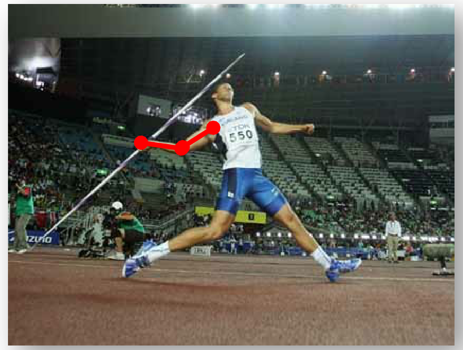
The same segment, seen from two places
What we already know, and what is missing
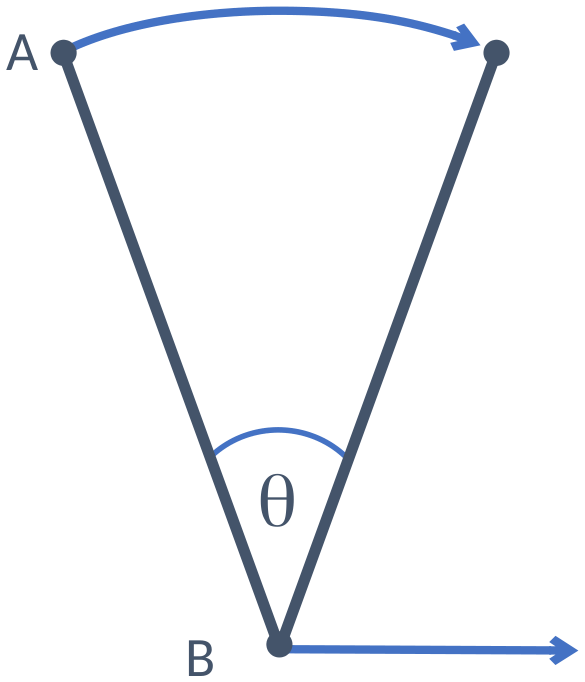
The general kinematics equation
The velocity of a segment relative to the ground (VA/G) is the vector sum of the segment's velocity relative to the joint (VA/B) and the velocity of that joint relative to the ground (VB/G).
Written in equation form:
VA/G = VA/B + VB/G
Where…
VA/G
is the linear velocity of A with respect to the ground
VA/B
is the tangential velocity of A with respect to B
VB/G
is the linear velocity of B with respect to the ground
Only the middle one is tangential — it is the term that comes from rotation, and it is always perpendicular to the segment. The other two are ordinary linear velocities.
The tangential term is the one we have to build
The equation requires the addition of linear velocity vectors:
VA/G = VA/B + VB/G
Assuming that we know VB/G and the angular velocity of A about B, then we need to determine VA/B, which is the tangential velocity of A about B:
VA/B = ωr
where ω is the angular velocity of A about B and r is the radial length from B to A.
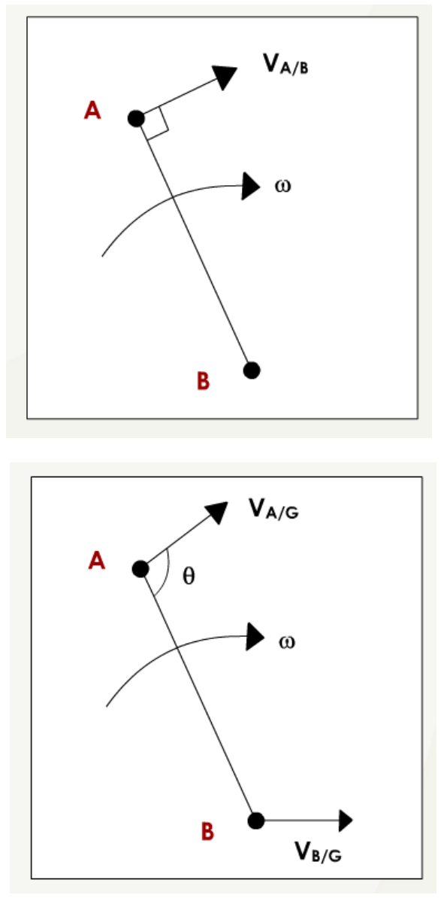
One equation for each directional component
This means that we need an equation for each directional component:
VA/Gx = VA/Bx + VB/Gx
VA/Gy = VA/By + VB/Gy
Then we need to use trigonometry to break up VA/B and VB/G into x and y components, and solve for the resultant velocity VA/G:
VA/G2 = VA/Gx2 + VA/Gy2
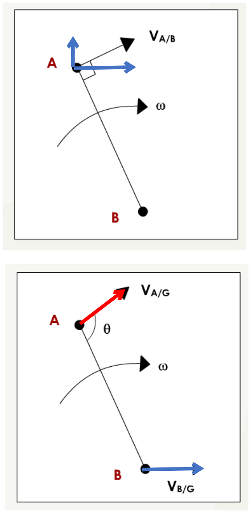
Adding the two vectors
Breaking each vector into x and y
Example Problem
What is the linear velocity of a point on the top of a bicycle wheel (radius = 34 cm) if the wheel has an angular velocity of 2 rad/s and the bicycle has a velocity of 10 m/s?
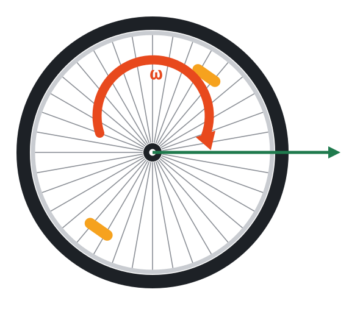
Solution
First make an equation for the velocity of A with respect to the ground:
VA/G = VA/B + VB/G
Then solve for VA/B:
VA/B = rω
VA/B = (0.34 m)(2 rad/s)
VA/B = 0.68 m/s
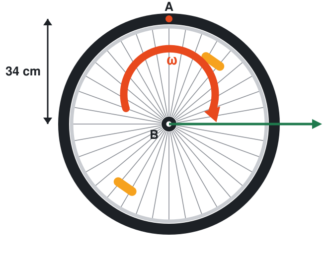
Solution (continued)
Then add the velocities to solve for VA/G:
VA/G = VA/B + VB/G
VA/G = 0.68 m/s + 10 m/s
VA/G = 10.68 m/s
At the top of the wheel the tangential velocity points forward, the same way the bicycle is going — so the two simply add. No trigonometry is needed because both vectors lie along x.
Every point on the wheel at once
Example Problem
A baseball pitcher's shoulder is translating forward as his arm rotates about the shoulder. The objective of the motion is to deliver the required velocity (magnitude and direction) to the ball before it leaves his hand. Assume that the radial distance of the hand from the shoulder (r) is 0.58 m, θ is 50 degrees and ω is 4.2 rad/s. Assume also that the shoulder has a velocity of 1.8 m/s acting horizontally with respect to the ground. What is the velocity of the hand with respect to the ground (i.e. VH/G)?
Draw a diagram
For simplicity, let us draw another diagram with all of the variables labelled on a rigid segment representing the arm.
The arm becomes one straight segment from shoulder to hand. The shoulder is the moving joint B; the hand is the rotating point A.
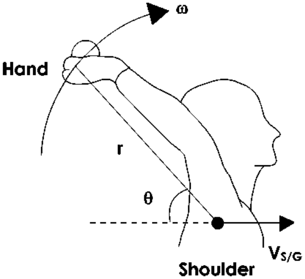
Develop an equation to describe the motion of the arm
The velocity is measured relative to the ground and is the vector sum of the ball's velocity relative to the shoulder and the shoulder relative to the ground.
The velocity of the Hand with respect to the ground (VH/G) is equal to the velocity of the Hand with respect to the Shoulder (VH/S) plus the velocity of the Shoulder with respect to the Ground (VS/G).
VH/G = VH/S + VS/G
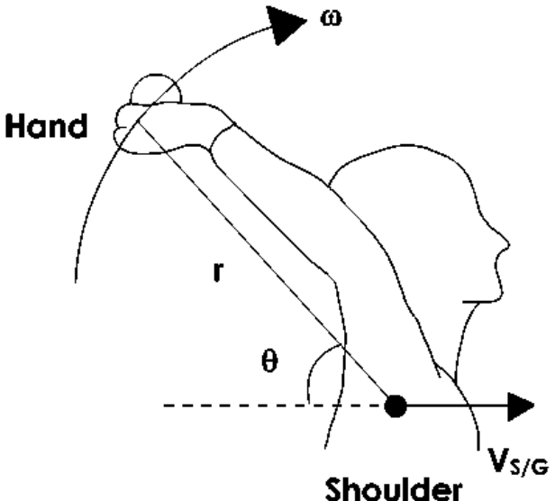
Separate the equation into vertical (y) and horizontal (x) components
We also know that VH/G is equal to
VH/G = VH/S + VS/G
Therefore it follows that
VH/Gx = VH/Sx + VS/Gx
VH/Gy = VH/Sy + VS/Gy
Separate the equation into vertical (y) and horizontal (x) components
θ = 50° is the angle of the segment. VH/S is perpendicular to the segment, so its angle to the horizontal is 90° − 50° = 40°.
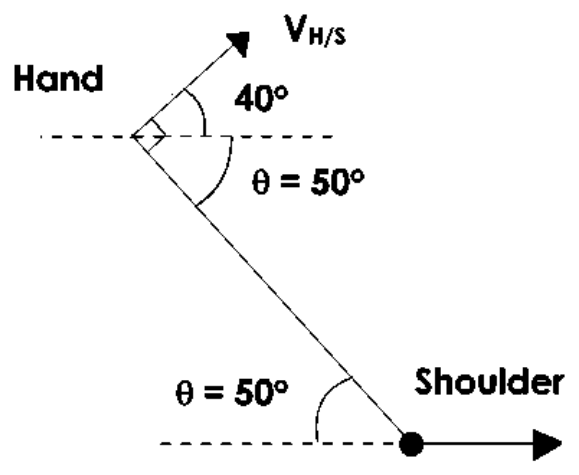
Why 40° and not 50°
Sub in known values and solve for component velocities
Now use the equations for the x and y components of VH/G:
X component: VH/Gx = VH/Sx + VS/Gx
= rω cos 40° + 1.8
= 3.67 m/s
Y component: VH/Gy = VH/Sy + VS/Gy
= rω sin 40° + 0
= 1.566 m/s
Solve for the resultant velocity
Now we need to solve for the magnitude and direction of VH/G.
Magnitude:
VH/G2 = VH/Gx2 + VH/Gy2
VH/G = 3.99 m/s
Direction:
tan−1(1.566 / 3.67) = 23.1°
The whole problem, live
… but what if we found that B was connected to another joint?
If we found that B was rotating about another joint centre (C) we would have to expand our equation to account for the tangential velocity of B about C, and no longer require the velocity of B relative to the ground:
VA/G = VA/B + VB/C + VC/G
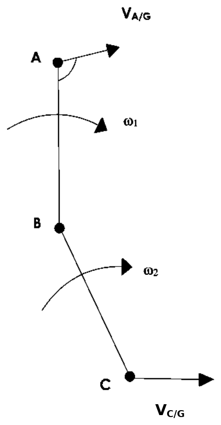
Where…
VC/G is the linear velocity of C with respect to the ground
VB/C is the tangential velocity of B rotating about C
VA/G is the linear velocity of A with respect to the ground
VA/B is the tangential velocity of A rotating about B
Two of the four are tangential — one per rotating segment — and each is ωr for its own segment, with its own ω and its own r. Only the last term, the one touching the ground, is a plain linear velocity.
Two segments, one chain
Why this matters
Walking, running, wheeling, throwing — in every one of them the joint you are rotating about is itself on the move.
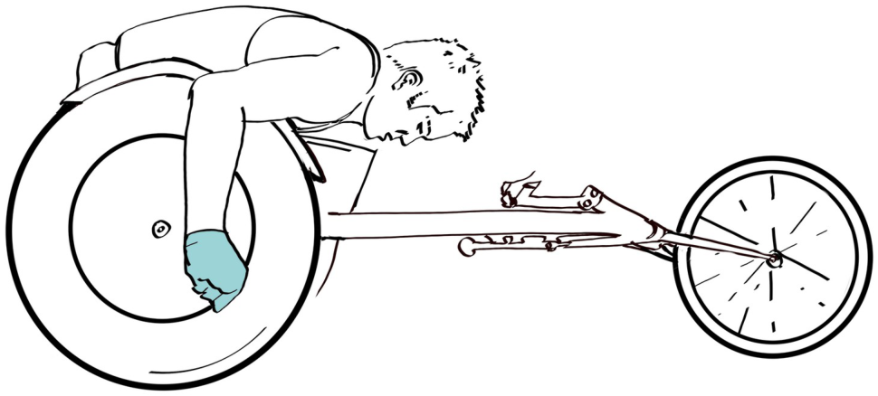
Feet, and what their velocity tells us
We could use one IMU on each of the pelvis, thigh and shank … how could we get foot velocity?
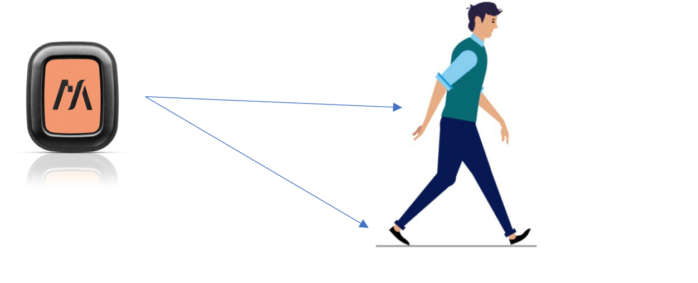
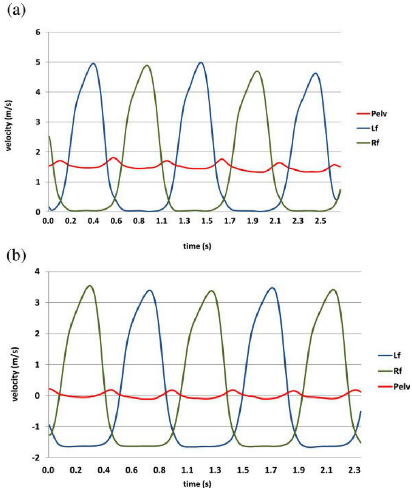
One real stride, built from the chain
What to take away
Next up: muscle mechanics · Further reading: McGinnis Chpt 7